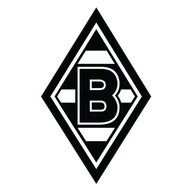

Боруссия Мёнхенгладбахв гостях, 18-е местоВердер — Боруссия Мёнхенгладбах прогноз на матч 27 ноября
Расчёт модели
- 2,3 : 1,0ожидаемые голы
- 65 %тотал больше 2,5
- 58 %обе забьют
Цифры считает модель по данным сайта, а не эксперт. Это вероятности, а не гарантия исхода. Как считает модель · словарь терминов.
- ТурнирБундеслига
Коротко о матче
По форме разница заметная: в пяти последних матчах Вердер — 3 победы, Боруссия Мёнхенгладбах — 1 победа. Слабое место — оборона: Боруссия Мёнхенгладбах — в среднем 1,6 пропущенного мяча за игру в этих пяти матчах, так что у соперника будут моменты.
Обе команды играют результативно: больше 2,5 мячей набиралось в 11 из 16 их последних матчей. Стоит учесть и площадку: дома Вердер — 4 победы в 5 матчах, на выезде Боруссия Мёнхенгладбах — 1 победа в 5. В последний раз команды встречались 31 января 2026 года: Вердер — Боруссия Мёнхенгладбах 1:1.
По расчёту модели фаворит — Вердер: 66 % на победу. Это оценка по данным, а не обещание исхода.
Стартовые составы
- 1Хейн
- 13Arthur
- 5Пипер
- 32Фридль
- 2Деман
- 44Регер
- 15Рейс
- 18Динкчи
- 20Чуки
- 11Нджинма
- 10Фюллькруг
Ожидаемый состав по данным FotMob — с учётом травм и дисквалификаций. Официальный появится примерно за час до начала.
- 33Бац
- 4Дикс
- 16Зандер
- 2Кьяродиа
- 29Скалли
- 47Uno
- 10Нойхаус
- 17Кастроп
- 25Хак
- 36Мохья
- 18Матино
Ожидаемый состав по данным FotMob — с учётом травм и дисквалификаций. Официальный появится примерно за час до начала.
Не сыграют
 Вердер
Вердер
- Вайзертравма, вернётся в конце ноября
- Альверотравма, вернётся в начале декабря
- Салимтравма, вернётся в начале января
- N'Diayeтравма, вернётся в начале декабря
- Стагетравма, вернётся в начале декабря
- Агутравма, вернётся в начале декабря
- Топптравма, вернётся в начале января
 Боруссия Мёнхенгладбах
Боруссия Мёнхенгладбах
- Ульрихтравма, вернётся в начале декабря
- Хасиокатравма · под вопросом
- Болинтравма
- Leszczyńskiтравма, вернётся в начале декабря
- Кляйндинсттравма, вернётся в конце ноября
- Leopoldтравма, вернётся в конце мая
Травмы и дисквалификации на этот матч, по данным FotMob. Обновляется несколько раз в день.
Отдых и расписание
У хозяев 5 дней отдыха, у гостей 6 дней отдыха.
Вердерхозяева
- 5дней отдыха
- 2матча за 7 днейвключая этот
- 2-йдомашний матч подряд
- 7дней до следующегоАйнтрахт Франкфурт
Прошлый матч: 22.11, Вердер — Гамбург 4:0
Боруссия Мёнхенгладбахгости
- 6дней отдыха
- 2матча за 7 днейвключая этот
- 1-йвыездной матч подряд
- 7дней до следующегоБайер
Прошлый матч: 21.11, Боруссия Мёнхенгладбах — Боруссия Дортмунд 0:1
Отдых считаем от начала прошлого матча. Еврокубок через 3–4 дня после матча — частая причина ротации.
Форма: последние матчи
Вердер 3 победы из 5
 Н2:2
Н2:2 В3:2
В3:2 В2:0
В2:0 П0:1
П0:1 В4:0
В4:0
Боруссия Мёнхенгладбах 1 победа из 5
- П1:2
- В3:2
- Н0:0
- П1:3
 П0:1
П0:1
Кто в форме
Больше всего голов и передач в последних матчах команды (все турниры).
Вердерза 5 последних матчей
| Игрок | Г | П | Г+П |
|---|---|---|---|
| Никлас Фюллькруг | 6 | 1 | 7 |
| Джастин Нджинма | 2 | 0 | 2 |
| Людовит Рейс | 1 | 1 | 2 |
| Эрен Динкчи | 1 | 1 | 2 |
| Марко Грюлль | 0 | 2 | 2 |
Боруссия Мёнхенгладбахза 5 последних матчей
| Игрок | Г | П | Г+П |
|---|---|---|---|
| Ваэль Мохья | 2 | 1 | 3 |
| Джо Скалли | 1 | 2 | 3 |
| Робин Хак | 1 | 0 | 1 |
| Сюто Матино | 1 | 0 | 1 |
| Zento Uno | 0 | 1 | 1 |
Дома и в гостях
Хозяева — в своих домашних матчах, гости — в выездных. Чемпионат этого сезона.
| Матчей | 5 | 5 |
|---|---|---|
| Побед | 4 из 5 | 1 из 5 |
| Ничьих | 1 | 0 |
| Забивают за игру | 2,8 | 1,0 |
| Пропускают за игру | 1,0 | 3,0 |
| Тотал больше 2,5 | 80% | 100% |
| Обе забили | 60% | 60% |
| «Сухих» матчей | 40% | 0% |
Жирным — лучшее из двух.
Личные встречи
- Вердер1:1Боруссия Мёнхенгладбах
- Боруссия Мёнхенгладбах0:4Вердер
Положение в таблице
| Команда | Место | И | В | Н | П | Голы | Очки |
|---|---|---|---|---|---|---|---|
| 6 | 10 | 5 | 3 | 2 | 21:15 | 18 | |
| 18 | 10 | 1 | 1 | 8 | 12:26 | 4 |
Куда дальше
Материалы носят информационный характер и не гарантируют результат. Реклама букмекеров на сайте не размещается. Сайт только для совершеннолетних (18+).